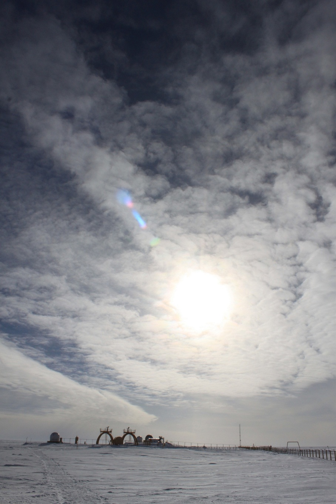

Ales Rybka was the organizer of 2009 World Championship. In my mind, he is determined,diligent, altruistic, and handsome...
I'm very excited to hear that he stayed in Antarctica last year.Asking for his permission, I'd like to share the photos with you.
Is he the first person that takes renju to Antarctica?

［此帖子已被 小丸.net 在 2011-8-14 23:41:19 编辑过］
［此帖子已被 小丸.net 在 2011-8-14 23:42:07 编辑过］
［此帖子已被 舍露里 在 2011-8-14 23:45:13 编辑过］
［ 屏蔽 于 2011-8-14 23:47:47 时奖励此帖[金币加 100 威望加1］
［ 屏蔽 于 2011-8-24 9:10:43 时花20金币送鲜花一朵］
Interview with him 2 years ago:
1.Tell us something about yourself: you age, your main job, your hobbies…
My name is Ales Rybka, I am 28 year old, I live in
2.Tell us something about your renju experience:
a)What is your kyu/dan
I got 3rd kyu in
b)Do you play renju or gomoku? Which do you like better?
I like both these games but I prefer renju if I have a chance because it is much more interesting.
c)What is your best achievement as a renju player?
I won czech championship in 2006, I got the 3rd place in Karape tournament (Sakata rules) in 2004.
3.Tell us something about Czech Renju Federation: when was it established? Did you establish it?
The Czech Renju Federation was found in 2003, one day before start of QT during WC in Vadstena. Me and my friends wanted to play in that tournament so we needed to be a me Good morning What a handsome Gong Sheng
#3 Re:Renju in Antarctica -- Ales Rybka 作者：小丸.net 发表时间：2011-8-14 23:49:44
How handsome he is!
#4 Re:Renju in Antarctica -- Ales Rybka 作者：小元 发表时间：2011-8-15 12:02:44
#5 Re:Renju in Antarctica -- Ales Rybka 作者：离子阵阵雨 发表时间：2011-9-10 2:22:05
I saw this，I 'm Happy
#6 Re:Renju in Antarctica -- Ales Rybka 作者：流逝 发表时间：2012-5-5 11:03:56
what beautiful snow
#7 Re:Renju in Antarctica -- Ales Rybka 作者：林导弹 发表时间：2012-5-10 21:13:10
who the hell is he ?
#8 Re:Renju in Antarctica -- Ales Rybka 作者：炫飞☆冲四不挡 发表时间：2012-5-11 3:12:40
I 不知道 你们在说什么
#9 Re:Renju in Antarctica -- Ales Rybka 作者：炫飞小活宝 发表时间：2012-5-25 3:52:49
#10 Re:流逝【==Re:Renju in Antarctica -- Ales Rybka==】 作者：炫飞小活宝 发表时间：2012-5-25 3:54:30引用：
原文由 流逝 发表于 2012-5-5 11:03:56 :
what beautiful snow